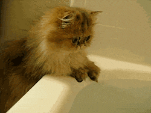
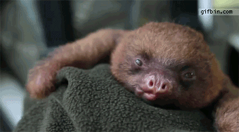

You can place trigger button wherever you want.
Выйдет кошка на прогулку Да пройдет по переулку, Смотрят люди, не дыша: До чего же хороша! Да не так она сама, Как узорная тесьма, Как узорная тесьма, Золотая бахрома. Да не так её тесьма, Как угодья и дома.
Вот шагает по дороге Кот Василий хромоногий. Спотыкаясь, чуть бредёт, Кошку под руку ведёт. Вниз спускается дорожка, А потом бежит на скат. И не знает тётя кошка, Что в избушке у окошка — Двое маленьких котят, Двое маленьких котят Под окошечком сидят. Слышат малые, что кто-то Постучался к ним в ворота.